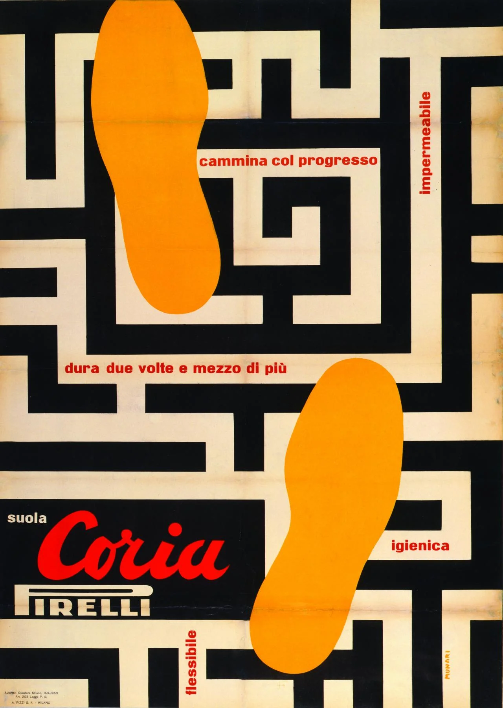

Campari
Una grande sperimentazione visiva e tipografica. Il cartellone è stato progettato per l'inaugurazione della Metropolitana di Milano ed è stato esposto lungo le banchine dei treni.
Il titolo ufficiale è “Declinatura grafica del nome Campari”, variazione grafica del nome Campari. Nel 2000 Italo Lupi ha disegnato un omaggio a questo manifesto sostituendo la parola Campari con Munari.

Bruno Munari, 1974
Manifesto
Altri Progetti

Ricerca e progettazione di un simbolo
Bruno Munari, 1977
Libro

Suole Coria
Bruno Munari, 1953
Manifesto

I Satelliti
Bruno Munari, 1971
Libro

Libri Illegibili
Bruno Munari, 1949
Libro

Almanacco Anti-Letterario di Bompiani
Bruno Munari, 1937
Periodico